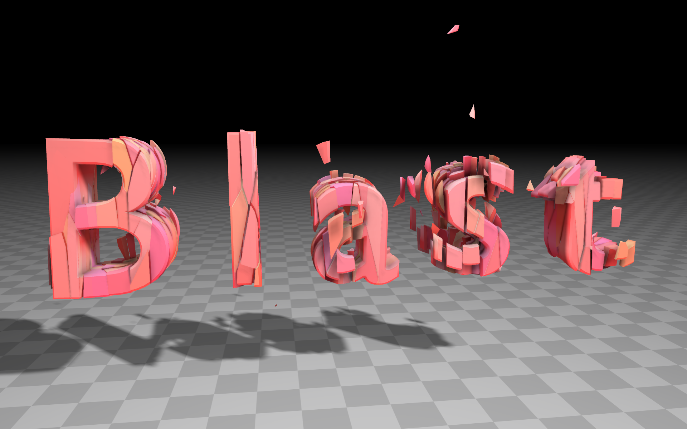
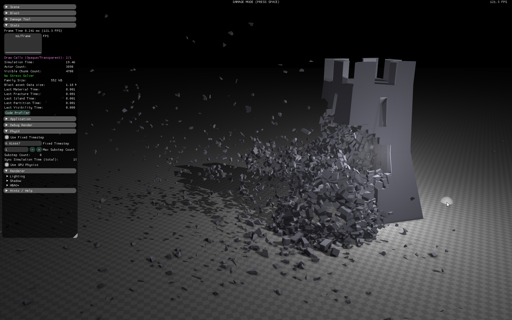
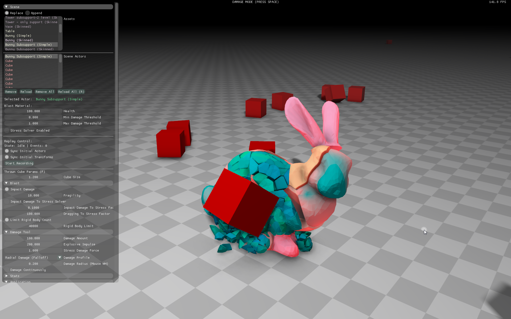
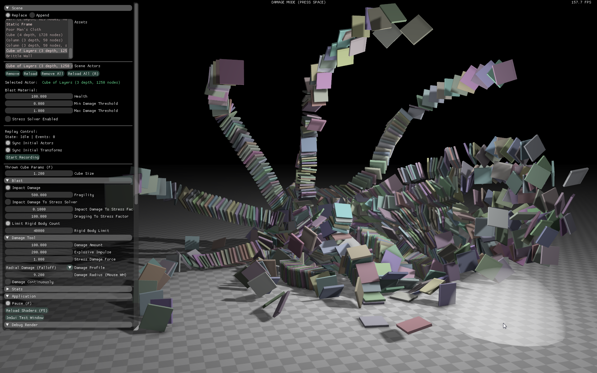
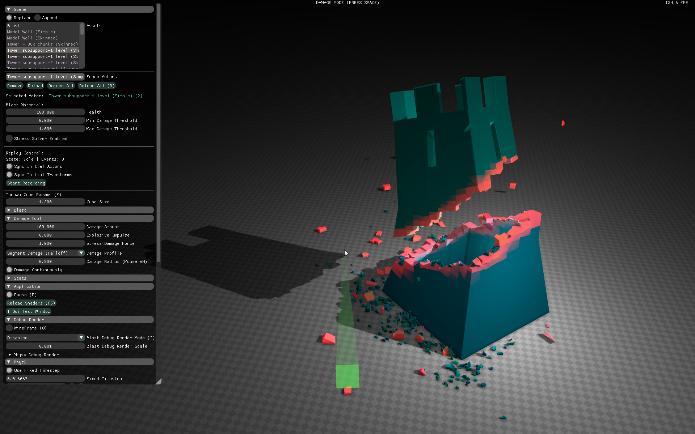
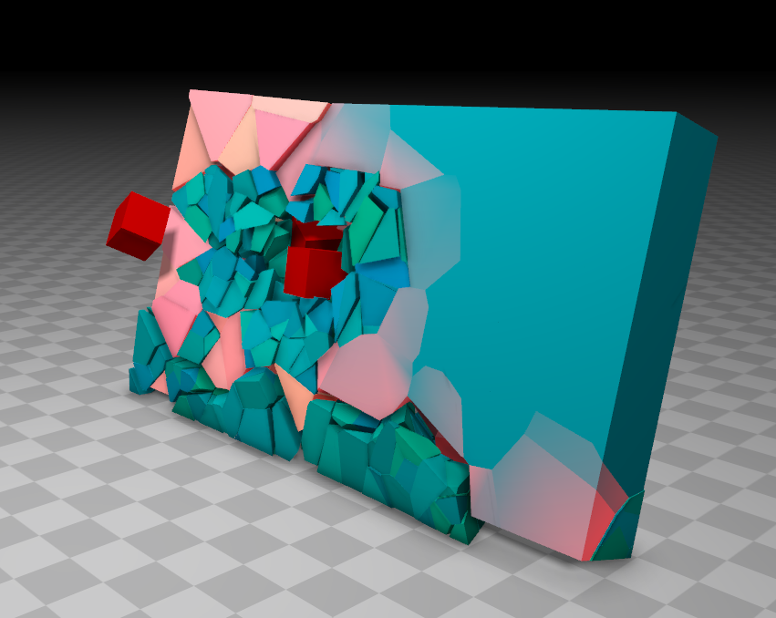
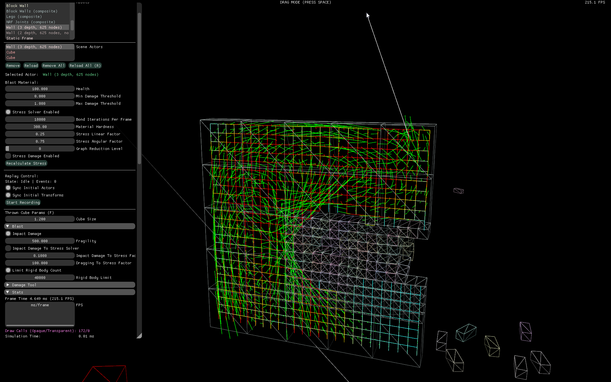
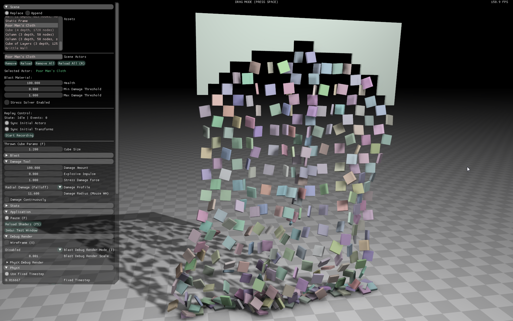

Blast SDK Documentation
{kind=link}
Blast is a NVIDIA Omniverse destruction library. It consists of three layers: the low-level (NvBlast), a high-level “toolkit” wrapper (NvBlastTk), and extensions (prefixed with NvBlastExt). This layered API is designed to allow short ramp-up time for first usage (through the Ext and Tk APIs) while also allowing for customization and optimization by experienced users through the low-level API.
Some notable features of NvBlast:
C-style API consisting of stateless functions, with no global framework or context.
Functions do not spawn tasks, allocate, or deallocate memory.
A support structure may be defined that includes chunks from different hierarchical depths.
Multiple chunk hierarchies may exist in a single asset.
Damage behavior is completely defined by user-supplied “shader” functions.
Has a portable memory layout for assets and actor families, which allows for memcopy cloning and direct binary serialization (on platforms with the same endianness).
Features of NvBlastTk:
C++ API which includes a global framework.
Manages objects, allocating and deallocating using a user-supplied callback.
Generates “worker” objects to process damage, which the user may call from multiple threads.
Uses an event system to inform the user of actor splitting and chunk fracturing.
Introduces a joint representation which uses the event system to allow the user to update physical joints between actors.
Notably absent from NvBlast and NvBlastTk:
There is no physics or collision representation.
There is no graphics representation.
Blast, at the low-level and toolkit layer, is physics and graphics agnostic. It is entirely up to the user to create such representations when Blast objects are created. Updates to those objects (such as actor splitting) are passed to the user as the output of a split function in the low-level API, or through a split event in the toolkit API. This allows Blast to be used with any physics SDK and any rendering library.
In order to help the user get started quickly, however, there is a PhysX-specific Blast extension which uses BlastTk and manages PhysX actors and joints. The source code for this extension, like all Blast extensions, is intended to be a reference implementation.
Current Blast extensions:
ExtAssetUtils - NvBlastAsset utility functions. Add external bonds, merge assets, and transform geometric data.
ExtAuthoring - a set of geometric tools which can split a mesh hierarchically and create a Blast asset, along with collision geometry and chunk graphics meshes in a separate files.
ExtExporter - standard mesh and collision writer tools in fbx, obj, and json formats.
ExtSerialization and ExtTkSerialization - serialization extensions for low-level and Tk layers. Uses Cap’n Proto to provide robust serialization across different platforms.
ExtShaders - sample damage shaders to pass to both the low-level and Tk actor damage functions.
ExtStress - a toolkit for performing stress calculations on low-level Blast actors, using a minimal API to assign masses and apply forces. Does not use any external physics library.
Gallery
Tower Explosion
{kind=link}
Bunny Impact Damage
{kind=link}
Layered Cube Explosion
{kind=link}
Table Impact Damage

Tower Slice
{kind=link}
Wall Impact Damage
{kind=link}
Stress Solver
{kind=link}
Joints
{kind=link}
Contents
- Introduction
- Low Level API (NvBlast)
- Globals API (NvBlastGlobals)
- High Level (Toolkit) API (NvBlastTk)
- Extensions (NvBlastExt)
- Definitions
- Copyrights
- Changelog
- [5.0.4] - 22-January-2024
- [5.0.3] - 1-November-2023
- [5.0.2] - 25-July-2023
- [5.0.1] - 22-June-2023
- [5.0.0] - 23-Jan-2023
- [4.0.2] - 31-Aug-2022
- [4.0.1] - 10-Aug-2022
- [4.0.0] - 31-May-2022
- [3.1.3] - 28-Feb-2022
- [3.1.2] - 24-Feb-2022
- [3.1.1] - 2022-01-12
- [3.1.0] - 2022-01-10
- [3.0.0] - 2021-10-13
- [2.1.7] - 2021-07-18
- [2.1.6] - 2021-06-24
- [2.1.5] - 2021-05-10
- [2.1.4] - 2021-04-08
- [2.1.3] - 2021-04-05
- [2.1.2] - 2021-03-15
- [2.1.1] - 2021-03-02
- [2.0.1] - 2021-03-01
- [2.0.0] - 2021-02-19
- [1.4.7] - 2020-10-20
- [1.4.6] - 2020-10-08
- [1.4.5] - 2020-09-30
- [1.4.4] - 2020-09-29
- [1.4.3] - 2020-09-26
- [1.4.2] - 2020-08-28
- [1.4.1] - 2020-06-26
- [1.2.0] - 2020-01-23
- [1.1.5] - 2019-09-16
- [1.1.4] - 2018-10-24
- [1.1.3] - 2018-05-30
- [1.1.2] - 2018-01-26
- [1.1.1] - 2017-10-10
- [1.1.0] - 2017-08-28
- [1.0.0] - 2017-02-24
- [1.0.0-beta] - 2017-01-24
- [1.0.0-alpha] - 2016-10-21
- API Documentation